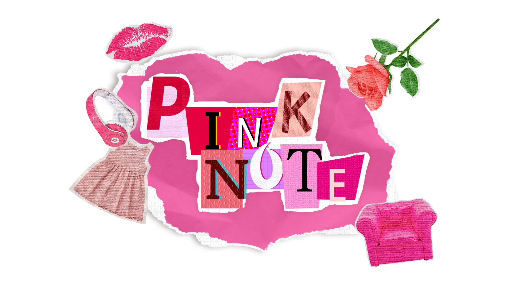
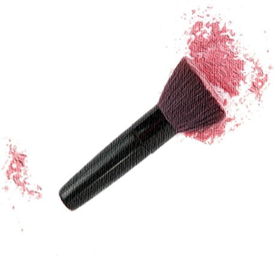
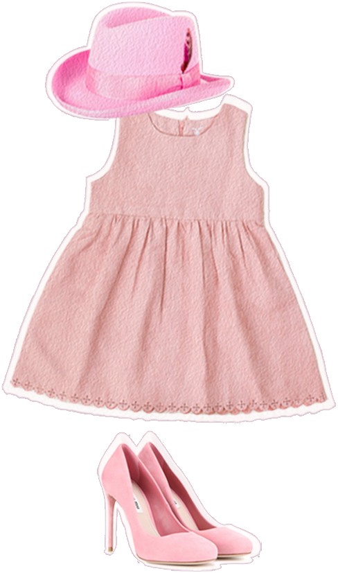
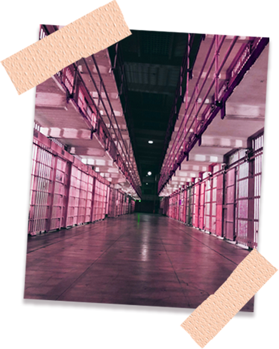
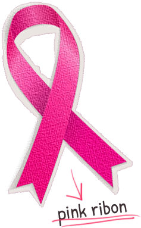
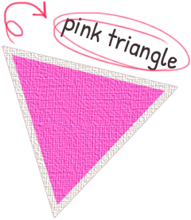

-누가 지어준 이름인가?-

분홍은 본래 분과 연지를 통칭하는 말이었다. 오랜 옛날부터 여인들은
분말과 염료로 얼굴을 살짝 붉게 칠해 미모를 꾸몄고 여기에서 화장이란
뜻과 어울러 엷고 고운 붉은빛이란 의미가 나왔다.
pink는 원래 패랭이꽃을 가리키는 말이었다. 지중해 연안지역에 널리
분포하는 패랭이꽃은 주로 분홍색에서 짙은 붉은색을 띤다. 후에 핑크는
패랭이꽃 색깔에 관계없이 독자적인 색이 이름으로 굳어졌다. 하지만
패랭이꽃에서 갈라져 나온 꽃에게는 아직도 핑크라는 말을 붙히고 있다.
-분홍색은 여자의 색?-
아주 오래전부터 아기들의 옷은 주로 흰색이었다. 색깔 있는 아기옷의 인기가 높아진 건 염색과 세탁방법이 향상되면서이다.11940년대까지는 남자 아기를 위해서는 분홍색의 옷을, 여자 아기를 위해서는 파랑색의 옷을 선택했다.
당당시의 유행을 결정하는 사람들이 분홍을 좀 더 ‘결단력이 있는’ 색으로 간주했고, 그래서 분홍색이 남자 아기에게 적합하다고 반생각했다. 반면에 파랑은 좀 더 ‘우아한’ 색이어서 여자 아이에게 잘 맞는다고 생각했다고 한다 .
그렇다면 분홍이 여자 아이와, 파랑이 남자 아이와 동일시되는 지금의 관례는 어떻게 해서 만들어진 것일까?
일부 역사학자들은 동성연애자들을 낙인찍기 위해 나치가 분홍색을 사용한 것이 그 원인일 것이라고 추측한다. 분홍색을 좋아한다는 것은 동성연애자들과 취향이 같은 것으로 여겨지기 때문에 사람들이 분홍색을 남자답지 못하고 유약하게 생각하게 되었다는 것이다. 1950년대부터 미국에서는, 분홍색 품목은 여아를 위한 것이었고 파란색 품목은 남아를 위한 것으로 인식이 완전히 뒤집혔다. 만약 아이의 성별에 확신이 없을 때는 아기 물품으로 연한 초록이나 노란색을 선택햇다. 하지만 여자아이는 분홍, 그리고 남자아이는 파랑이라고 결정하는 것에는 사실상 성별에 기초한 색깔의 편견이 깔려 있다는 사실이 최근의 연구를 통해 밝혀졌다. 그리고 문화적 편견을 배제하기 위해 중국계를 포함한 다른 집단을 대상으로 실시된 영국의 한 연구 결과에서는 여성들이 따뜻하며 붉은 계통의 색을 선호하는 경향이 있다는 것이 밝혀졌다. 또한 학자들에 따르면 여성들의 눈은 이러한 붉은 계통의 색을 더 잘 구별할 수 있다고 한다. 그 이유는 여성들은 수세기 동안 잘 익은 열매나 딸기 같이 작은 과실을 채집하는 역할을 했다는 사실뿐만 아니라, 아기가 병에 걸린 것의 여부를 알아 차리기 위해서 아기의 볼이 붉게 상기된 것을 세심하게 관찰했기 때문이라고 한다.
일부 역사학자들은 동성연애자들을 낙인찍기 위해 나치가 분홍색을 사용한 것이 그 원인일 것이라고 추측한다. 분홍색을 좋아한다는 것은 동성연애자들과 취향이 같은 것으로 여겨지기 때문에 사람들이 분홍색을 남자답지 못하고 유약하게 생각하게 되었다는 것이다. 1950년대부터 미국에서는, 분홍색 품목은 여아를 위한 것이었고 파란색 품목은 남아를 위한 것으로 인식이 완전히 뒤집혔다. 만약 아이의 성별에 확신이 없을 때는 아기 물품으로 연한 초록이나 노란색을 선택햇다. 하지만 여자아이는 분홍, 그리고 남자아이는 파랑이라고 결정하는 것에는 사실상 성별에 기초한 색깔의 편견이 깔려 있다는 사실이 최근의 연구를 통해 밝혀졌다. 그리고 문화적 편견을 배제하기 위해 중국계를 포함한 다른 집단을 대상으로 실시된 영국의 한 연구 결과에서는 여성들이 따뜻하며 붉은 계통의 색을 선호하는 경향이 있다는 것이 밝혀졌다. 또한 학자들에 따르면 여성들의 눈은 이러한 붉은 계통의 색을 더 잘 구별할 수 있다고 한다. 그 이유는 여성들은 수세기 동안 잘 익은 열매나 딸기 같이 작은 과실을 채집하는 역할을 했다는 사실뿐만 아니라, 아기가 병에 걸린 것의 여부를 알아 차리기 위해서 아기의 볼이 붉게 상기된 것을 세심하게 관찰했기 때문이라고 한다.

-감옥이 분홍색이라면?-

스위스 취리히에 있는 페피콘 교도소는 흉악범들을 온순하게 만들기 위해 감옥에 핑크색 페인트를 칠하기로 했다.
심리학자 다니엘라 슈패스는 '쿨 다운 핑크' 색상이 진정 효과가 있어 혈압을 낮춰 준다고 주장했다. 즉 죄수들의 공격적 성향도 잠잠해지게 도울 수 있다고 믿은 것이다. 페피콘 교도소는 4개의 방에 핑크색 페인트를 칠했고, 여기에 공격성이 심한 죄수들을 수감했다. 이후 4년 간 평가를 통해 슈패스와 페피콘 교도소장은 '핑크 방' 덕분에 수감자들의 공격성이 감소했다고 보고하며 그 효과를 인정했다.
핑크색을 보면 뇌에서 노르아드레날린이라고도 불리는 노르에피네프린이 분비 된다. 노르에피네프린은 신경전달물질 중 하나인데, 신경계의 작동, 혈관 기능, 간 기능 및 기분 조절에 영향을 미친다. 이것이 공격적인 행동을 유발하는 호르몬을 억제시켜주고감정적으로 대응하지 않게 도와준다. 그렇기 때문에 폭력적인 수감자들이 핑크색인 벽면을 보게 되었을때 노르에피네프린의 분비로 인해 수감자들의 화가 금방 수그러들었던것이다. 노르에피네프린은 뇌에 산소를 증가시키고 근육에 더 많은 혈액을 공급하면서 효과적으로 스트레스를 관리할 수 있게 해준다.

-무엇을 상징하게 되었나?-

핑크리본은 유방암암 인식의 국제 상징이다. 일반적으로 핑크색과 핑크색리본은 유방암 상표와 함께 착용자
와 후원자를 식별하고 여성 유방암 환자를 위한 도덕적인 후원을 표현한다. 핑크리본은 가장 일반적으로 국립
유방암 인식의 달 동안 볼 수 있다. 역사유방암 인식과 함께 핑크 리본이 처음으로 사용된 것은 1991년 가을,
유방암 생존자들을 위한 뉴욕 경주에서 Susan G. Komen Foundation이 참가자들에게 핑크색 리본을
나눠 준 일이다. 핑크색 리본은 그 다음해인 1992년 National Breast Cancer Awareness Monte의
공적인 상징으로 받아들여졌다.
핑크 트라이앵글은 제2차세계대전 때 나치 수용소에 강제 수용된 사람에게 의무적으로 장착되었던 삼각형
배지로, 남성 동성애자를 나타냈던 것이다. 나치는 강제로 수용된 사람들의 왼쪽 가슴에 거꾸로 된 삼각형
모양의 배지로 수용자들을 분류했다. 동성애자를 극심하게 탄압하던 나치는 분홍색 삼각형을 다른 색깔의
배지보다 2~3cm 더 크게 제작했다. 그러나 현대에 들어서 성소수자들의 자긍심 을 나타내는 상징으로
재사용되기 시작하였으며, 성소수자 권리운동의 상징 중 하나로 활용되고 있다. 1970년대 이후로
핑크 트라이앵글은 권리 옹호의 상징물이 되어 과거를 잊지 말자는 의미에서 바로 세워진 분홍색 삼각형으로
사용되기도 했다.
